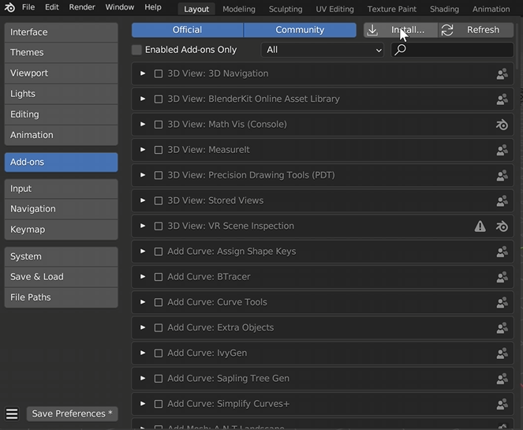
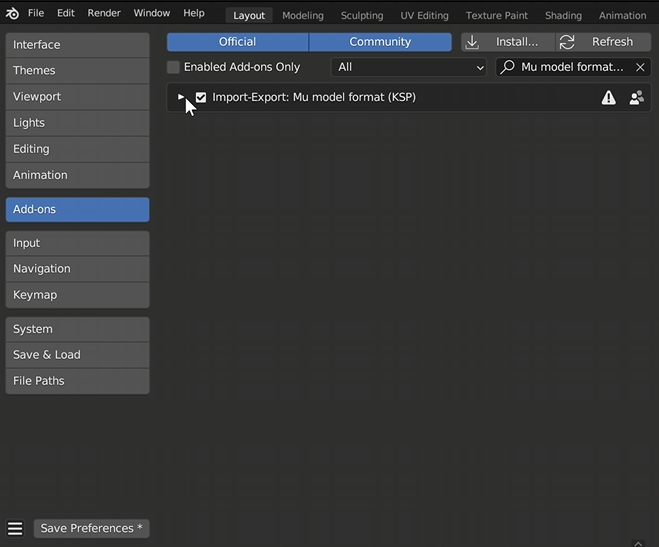
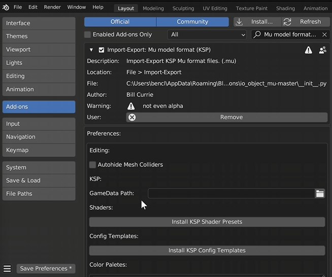
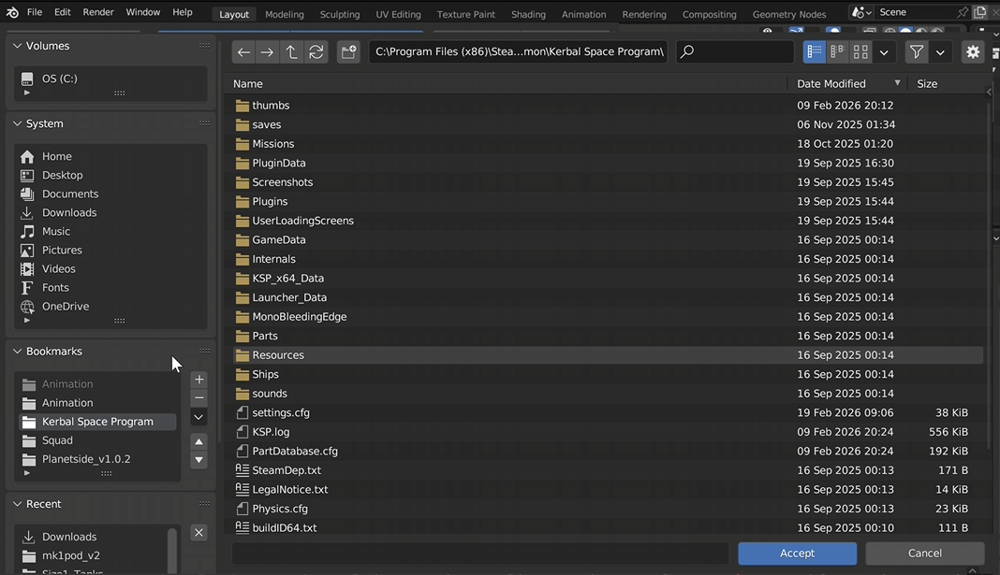
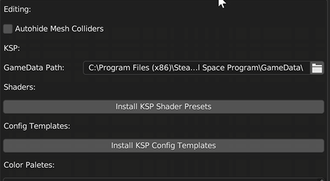

Before we can import Kerbal Space Program ships into Blender, we first need to install the KSP Blender add-on. This add-on allows Blender to read craft files and individual game parts so they can be edited, rendered, or animated.
Open the Add-on Installer
Once the add-on ZIP file has finished downloading, open Blender.
To install the add-on:
- Click Edit in the top menu.
- Select Preferences.
- Navigate to the Add-ons tab.
- Click Install.
- Select io_object_mu-master.zip in downloads.

After clicking install, locate the downloaded add-on ZIP file and select it.
Once installed, make sure the add-on checkbox is enabled so Blender activates it.

Before closing the Preferences window, expand the newly installed add-on settings. Inside the panel you will see an option labeled GameData Path.
Blender needs to know where your Kerbal Space Program game files are located.

If you installed the game through Steam, you can find it at:
- OS
- Program Files (x86)
- Steam
- SteamApps
- Common
- Kerbal Space Program
Once you locate the folder, click the plus icon to bookmark it. This will make it easier to return to later.
Select the GameData folder and click Accept.

Make sure the final folder listed in the path is GameData.
This is required for the add-on to work correctly.

Blender Version Note
Working in Different Blender Versions
At this point, you do not need to remain in Blender 3.6. You can save the imported craft file and then append it into another Blender version if you prefer.
This tutorial continues using Blender 3.6, since it is commonly used for animation workflows, but the process should work in other compatible versions as well.

Separating the Ship Parts
Converting Instances into Real Objects
When the craft first imports into Blender, it will appear as one combined object and will contain many empty objects used by the game.
To separate the parts:
- Select the imported ship.
- Click Object in the top menu.
- Choose Apply.
- Select Make Instances Real.
This converts the instanced parts into individual objects so they can be edited and animated.
Removing Unnecessary Empty Objects
Cleaning Up the Scene
After separating the objects, the scene will still contain many empty objects that are not needed for animation.
Instead of deleting them one by one, you can remove them quickly using the following method:
- Click Select
- Choose Select by Type
- Select Mesh
This selects all mesh objects in the scene.
Next:
- Click Select again
- Choose Invert Selection
- Press X to delete the selected objects
This removes all the empty objects and leaves only the ship parts.
Checking Materials and Parts
Reviewing Imported Materials
Switch to Material Preview Mode to see how the craft materials were imported.
You should now see:
- Colored parts
- Engine covers
- Various materials used by the craft
At this stage, you want to delete any parts you do not need and clean up the model beforecontinuing.
Preparing the Ship for Animation
Parenting the Craft to an Empty Object
Since the craft is made up of many individual parts, animating it directly can be difficult. A simple solution is to parent the ship to a single control object.
To do this:
- Press Shift + A
- Add an Empty → Cube
- Move the empty object to the center of mass of the ship
- Press A to select all objects
- Press Ctrl + P
- Choose Parent to Object
Now when you move or rotate the empty object, the entire ship will move together as a single unit.
Result
At this point you should have:
- A clean ship model
- Unnecessary objects removed
- The entire craft controlled by a single empty object
Your ship is now ready to be positioned, animated, and rendered inside Blender.